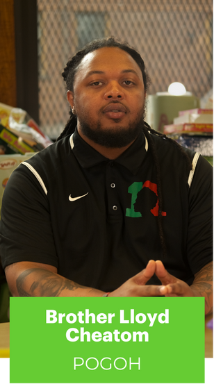
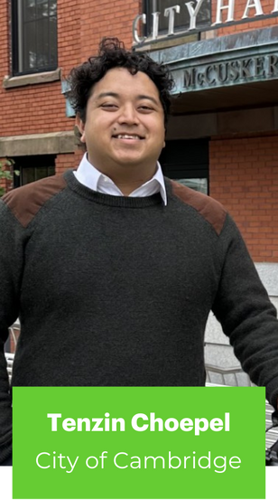
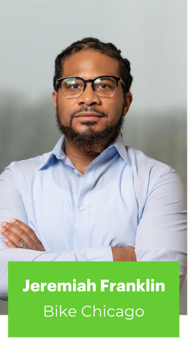
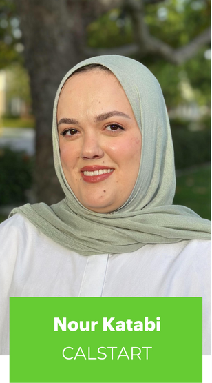
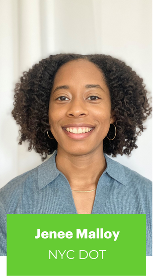
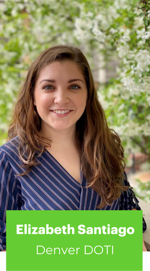
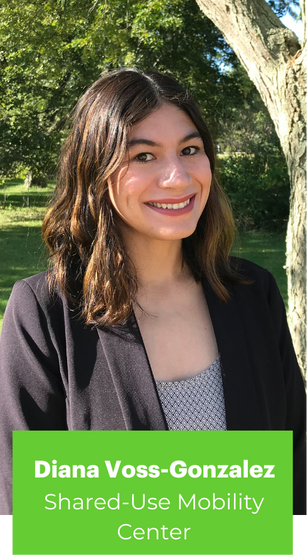

Introducing the 2024-2025 Transportation Justice Fellows!
by National Association of City Transportation Officials (NACTO)
November 13, 2024
Meet 11 individuals from across the U.S. shaping a more equitable transportation system.

The Better Bike Share Partnership — comprised of NACTO, PeopleForBikes, and the City of Philadelphia — is proud to announce the 2024-2025 cohort of the Transportation Justice Fellowship.
The fellows will focus on shared micromobility as a critical tool for expanding the reach of public transportation, operationalizing equity, and building transportation justice. Our eleven fellows work in all sectors of shared micromobility, including government agencies, nonprofits, advocacy organizations, and private operators.
In 2021, The Better Bike Share Partnership debuted the Transportation Justice Fellowship, a first-of-its-kind program designed specifically for those who identify as people of color working to embed mobility justice in transportation. Led by NACTO and open to U.S.-based, early- to mid-career professionals, the fellowship invests in supporting and sustaining the people doing the heavy work to operationalize equity across the transportation field.
Our fourth fellowship program will run from November 2024 to June 2025. A whopping 120 people applied to the program–and we’re pleased to have a final cohort of 11 fellows whose backgrounds and skill sets reflect the diverse communities we aim to serve. Fellows hail from all regions of the U.S., and each brings a unique biography as well as a variety of hard and soft skills to share with the group. By creating a community of peers, our aim is to equip the fellows with the skills necessary to address some of the toughest transportation challenges facing the U.S. today, while building their capacity to continue making change in the transportation field for many years to come.
Fellows will participate in eight months of training, developing their individual and institutional capacities to create a more just and equitable mobility field and equitable transportation systems.

Fellows build connections that go beyond the end of the Transportation Justice Fellowship. Alumni met up at the NABSA Conference in Philadelphia in October.
Through skills-building sessions, one-on-one coaching, special trainer visits, and structured collaboration, fellows will receive deep support as they advance professionally and work on tangible ways to improve mobility for communities of color. Robin Wright-Pierce and Nelson Pierce, Jr. from Transforming Change will once again partner with BBSP to oversee the cohort.
Meet the 2024-2025 Fellows:
Rachel Brown
Manager of Transit Infrastructure Program Planning, NJ Transit | Linkedin
Rachel F. Brown (she/her/hers) is a dedicated advocate for enhancing transit infrastructure, committed to elevating public transportation for New Jersey communities. As Manager of Transit Infrastructure Program Planning at NJ TRANSIT, Rachel has been instrumental in securing over $500 million in federal funding for essential rail infrastructure projects focused on accessibility, connectivity, and resiliency. With expertise in urban planning, transportation research, and capital project evaluation, she has led transformative projects such as the Newark Penn Station Modernization Master Plan.
Rachel lives in Newark, NJ, and holds a master’s degree in urban planning from NYU’s Wagner School of Public Service. Before joining NJ TRANSIT, she contributed to the North Jersey Transportation Planning Authority (NJTPA) Vibrant Places Program, where she facilitated creative placemaking initiatives that support place-based investments and regional economic development.

Brother Lloyd Cheatom
Equity Initiatives Manager, POGOH | LinkedIn
Brother Lloyd (he/him/his) is the Equity Initiatives Manager at POGOH, Pittsburgh’s bike share system, operated by Bike Share Pittsburgh Inc. He is responsible for the advancement of POGOH’s social mission and ensures internal and external programs, partnerships, and strategies are advancing the organization’s Diversity, Equity, and Inclusion goals. As an integral member of the Marketing and Community Outreach Department, Brother Lloyd contributes to overall program development and to the outreach and marketing efforts.
Prior to working with POGOH, Brother Lloyd co-founded 1Nation Mentoring, a non-profit that cultivates youth leadership potential, empowers positive behavior, and promotes healthy life decisions in school and the community. Brother Lloyd is also a founding member of Rite Rollers Cycling Club, where the mission is “to inspire change, encourage mindfulness, and connect generations through wellness and cycling.”
Brother Lloyd was born and raised in Pittsburgh, where he still resides with his lovely wife and their beautiful family. He holds a Master of Science in instructional leadership from Robert Morris University and a Bachelor of Science in marketing from Saint Vincent College. He is now a doctoral candidate in the School of Education at Duquesne University.

Tenzin Choepel
Active Transportation Coordinator, City of Cambridge Community Development Department | LinkedIn
Tenzin Choephel (he/him/his) is the Active Transportation Coordinator for the City of Cambridge, Massachusetts. He currently manages the city’s bike education program, teaching on-bike education to sixth graders and workshops to adults. He also works closely on Bluebikes, Greater Boston’s bike share system. Tenzin received his Bachelor of Arts in economics and classical civilizations from Colby College.
Prior to working for Cambridge, Tenzin volunteered with Americorps before transitioning to teaching roles. Tenzin’s time as a teacher sparked his passion for sharing knowledge and information as a means to build equity. His goal is to continue to increase access to biking while addressing the historical inequities around being a cyclist.
Tenzin grew up in New Haven, Connecticut after immigrating to the United States at the age of two. Tenzin’s family is from Tibet, and he takes pride in any opportunity to share the food and rich culture. In his free time, you can find him cooking a new recipe, in a pool playing water polo, or on the court playing volleyball.

Jeremiah Franklin
Program Director, Bike Chicago, City of Chicago Department of Transportation
Jeremiah Franklin, or Jerry (he/him/his), is a dedicated advocate committed to expanding access to safe, affordable, and environmentally friendly transportation options, with a strong focus on cycling. Growing up in Chicago, Jerry transitioned from the nonprofit sector—where he excelled in forging strategic partnerships, securing diverse funding, and driving organizational goals—to his current role at the Chicago Department of Transportation.
As the Program Director for Bike Chicago, Jerry orchestrates daily operations and oversees the comprehensive delivery of the program. He is driven by a deep commitment to reducing Chicago’s carbon footprint by promoting the numerous health and environmental benefits of cycling to its residents. Through the Bike Chicago distribution program, Jerry has successfully provided over 3,000 low-income residents with bikes, helmets, safety training, and essential cycling gear.
A South Side native, Jerry holds a strong background in nonprofit management and development, as well as a Master of Public Administration from Roosevelt University. With a vision to transform Chicago into the greenest, cleanest, and most bike-friendly city in America, Jerry is determined to make sustainable transportation a reality for all residents.
Jonathan Gomez-Pereira
Program Manager, WalkMassachusetts | LinkedIn
Jonny (he/él) is a bilingual community organizer from Chelsea, Massachusetts. He is the proud son of Salvadoran and Honduran immigrants. His previous professional experiences include health equity and anti-displacement organizing in his home communities of Chelsea and East Boston. His time organizing and living in environmental justice communities have shaped his understanding of equity and how it is shaped by the built environment. This has led him to his current role at WalkMassachusetts, where he currently serves as a Program Manager working to advance pedestrian accessibility statewide. His work is underpinned by his commitment to language justice, which allows him to include Spanis-speaking communities in planning processes in the Boston area. Jonny currently uses his organizing skills to work toward democratizing planning practices locally.
Jonny received his Bachelor of Arts in botany and anthropology from Connecticut College in New London, Connecticut. He has served as the chair and vice-chair of the Community Preservation Committee in Chelsea, Massachusetts, where he sought to advance projects that increase open and green space in addition to the creation of affordable housing. He currently serves as a School Committee member in Chelsea.
Jalonda Hill
Founder and Board President, Colored Girls Bike Too
Jalonda Hill is an urban planner and community advocate with a master’s degree in urban planning from the University at Buffalo. As a former paralegal for the Western New York Law Center, she identified plaintiffs for a class action lawsuit addressing racially biased traffic stops, contributing to efforts against discriminatory policing. She co-founded the Fair Fines and Fees Coalition, where she led successful campaigns to abolish Buffalo’s school speed zone camera program and eliminate excessive fines that disproportionately affect marginalized communities. Currently, the coalition advocates for the removal of police from traffic enforcement.
Jalonda is also the Founder and Board President of Colored Girls Bike Too (CGBT), an organization that empowers Black women while advancing racial, mobility, and healing justice through the transformative power of cycling. One of CGBT’s key projects is Holistic Cycles, a donation-based, volunteer-run bike shop that promotes accessibility to biking resources.
Additionally, she serves on Buffalo’s Bicycle and Pedestrian Advisory Board, advocating for policies that enhance mobility justice for underserved communities. Through her diverse experiences, Jalonda is committed to shaping safer and more equitable transportation systems.

Nour Katabi
Program Manager II, CALSTART | LinkedIn
Nour Katabi (she/her/hers) combines her experience in community engagement and transportation justice advocacy to drive equitable approaches in shared mobility. As a Project Manager II at CALSTART, she supports the Clean Mobility Options Program in California, advancing clean transportation options and expanding access to shared mobility services for historically underserved communities. Her work in shared mobility focuses on enhancing transit through diverse operating models, making it accessible for people to get around. She holds a bachelor’s degree in urban studies from University of California, Irvine and is passionate about creating accessible transportation that embrace minoritized experiences. Originally from Southern California, Nour enjoys taking walks near bodies of water and exploring nature trails.
Adriana Lopez Hernandez
Transportation Consultant / Sustainable Mobility Advocate | LinkedIn
Adriana Lopez Hernandez (she/her/hers) is passionate about transforming cities to improve the quality of life for all residents, especially those in underserved communities. In over six years working in urban mobility and policy, she has focused on making transportation more accessible, equitable, and sustainable. Her work is rooted in a commitment to empowering people by connecting them to the opportunities and services they need.
Adriana’s experience includes advising local and national governments on urban planning and mobility, championing policies that consider gender and social equity, and implementing people-centered transportation solutions. She collaborates closely with diverse stakeholders, building partnerships to create lasting, positive change. Her insights are enriched by global best practices, drawing on the integrated, accessible transport systems. Adriana prioritizes community voices in her work, designing solutions that truly respond to local needs.

Jenée Malloy
Policy Analyst, Bicycle Unit, New York City Department of Transportation | LinkedIn
Jenée Malloy is a dedicated transportation professional passionate about advancing micromobility solutions to create more accessible and sustainable cities. At the New York City Department of Transportation (NYC DOT), she spent three years as a bike share planner, playing a key role in Citi Bike’s expansion across Brooklyn and the Bronx. In this role, she managed the planning and installation of over 200 bike share stations, coordinating with private partners and supporting community outreach efforts to provide equitable service.
Currently, Jenée serves as a Policy Analyst in the Bicycle Unit at NYC DOT, where she takes a data-driven approach to policy research and project development, supporting the city’s micromobility initiatives. Combining her expertise in planning and policy, Jenée takes a holistic approach to urban mobility, striving to create sustainable transportation systems that serve diverse communities. She holds a Master’s of Urban Planning from New York University (NYU). Outside of work, Jenée enjoys long-distance cycling and has competed in worldwide events spanning from Portugal to South Africa.

Elizabeth Santiago
Vision Zero Program Administrator, Department of Transportation and Infrastructure, City of Denver | Linkedin
Elizabeth N. Santiago (she/ella) is a driven public health professional with demonstrated success in leading multifaceted projects and building meaningful community relationships. While earning her Master of Public Health at the University of Michigan, Elizabeth engaged in a multidisciplinary program that examined population health through the nexus of public health, public policy, and urban planning. Through this program, she gained valuable insights into how social determinants, such as transportation access and the built environment, disproportionately impact neighborhood health outcomes.
As the Vision Zero Program Administrator in Denver’s Department of Transportation and Infrastructure, Elizabeth applies her training and experience to support traffic safety initiatives across the city, focusing on historically marginalized and underserved communities. She is passionate about using community-centered, strengths-based approaches to foster vibrant urban spaces that reflect neighborhood identity, promote climate resilience, and empower all residents to thrive. Through the Transportation Justice Fellowship, Elizabeth is eager to explore the role shared micromobility can play in connecting communities and advancing transportation equity.

Diana Voss-GonzalezProgram Manager, Shared-Used Mobility Center | LinkedIn
Diana is a Program Manager at the Shared-Use Mobility Center (SUMC), with experience in active transportation planning, education, capacity building, and technical assistance. She’s passionate about advancing human-centered transportation systems through inclusive and participatory planning.
Before joining SUMC, Diana supported various urban and rural communities across California through community-centered engagement. She has led, in both English and Spanish, numerous focus group meetings, interactive workshops, stakeholder advisory groups, and pop-up events that informed transportation plans. Diana holds a Bachelor of Science in management of natural resources and business administration from the Universidad Marista de Mérida, México, and received her Master of Science in agricultural production and business, with a focus on the urban environment, from the University of Illinois, Urbana-Champaign.